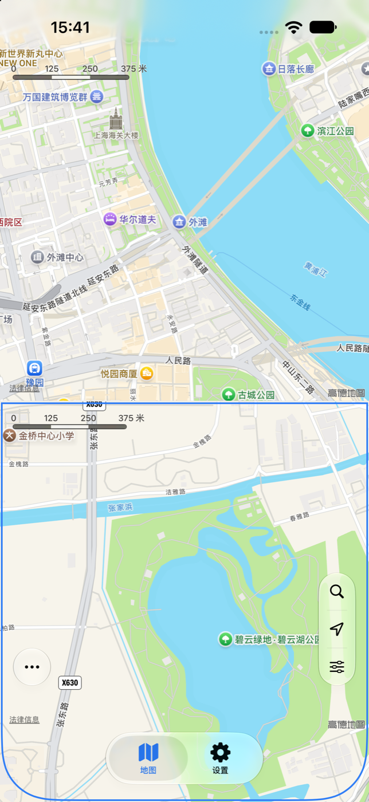
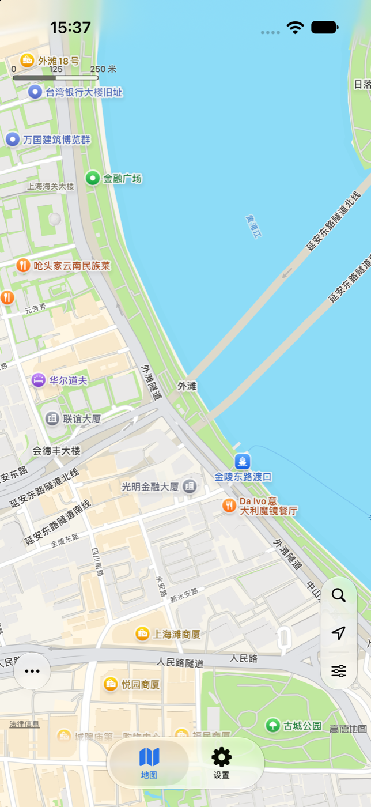
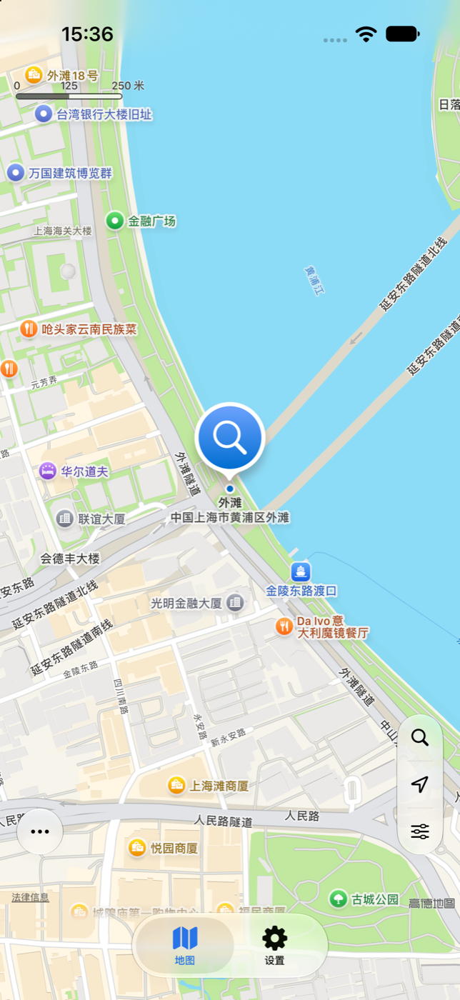
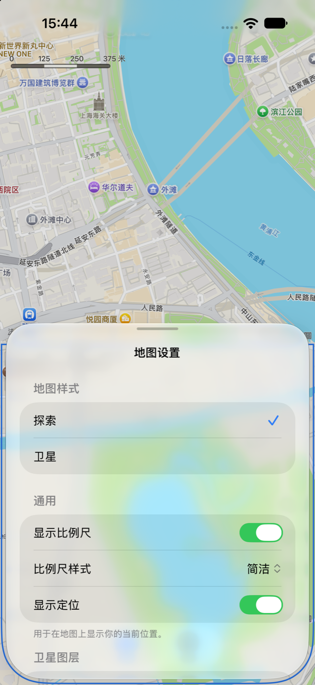
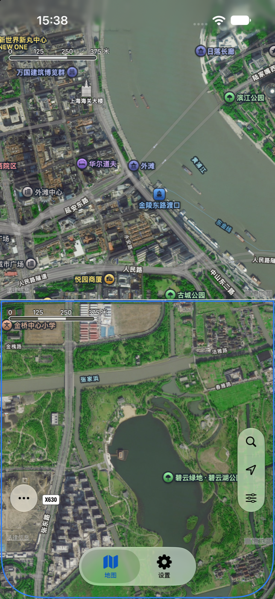
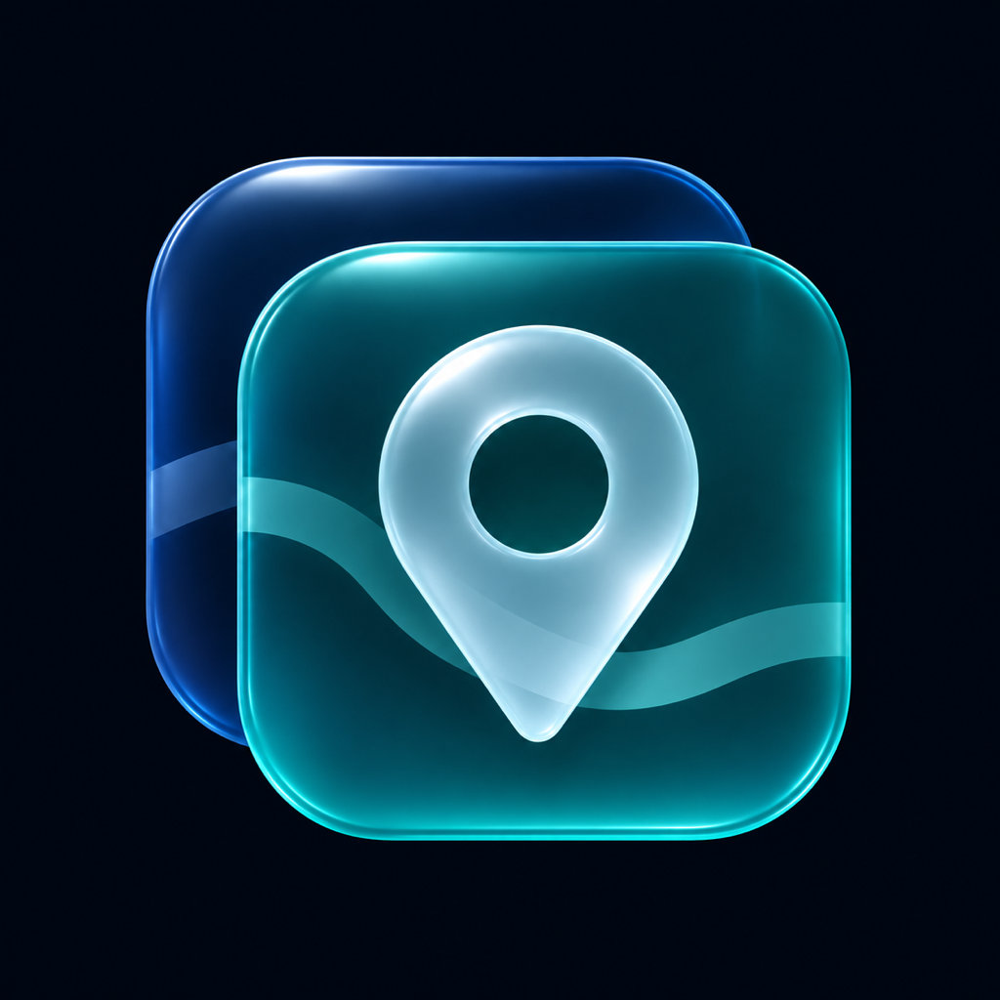
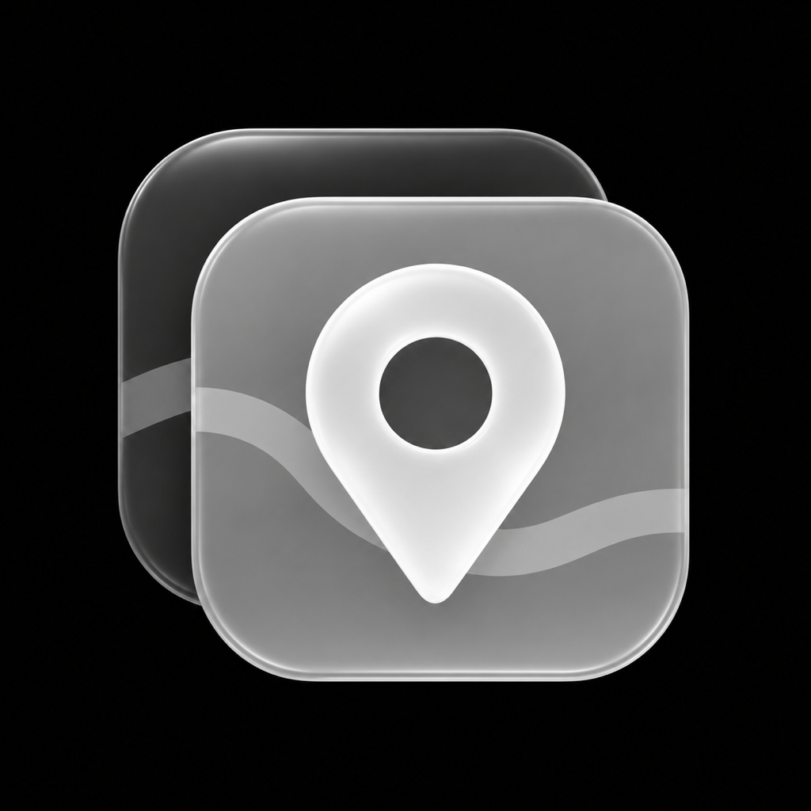

01
两张地图，一起看。Two maps. Side by side.
上下两个独立视野，比例尺实时同步，也能自由解锁。搜索和定位落到你选中的面板。Explore two independent map panes, keep their scales in sync or unlock them. Search and locate in the selected pane.
↕
地图，是一切的起点EVERYTHING STARTS WITH A MAP
浏览、对比、搜索、探索图层。
让每一次发现，都回到地图本身。Browse, compare, search and explore layers.
Keep every discovery grounded in the map.
iPhone & iPad · iOS 17+ · 简体中文 / EnglishEnglish / 简体中文

01 / 以地图为中心MAP FIRST
打开就是全屏地图。功能以浮层与抽屉出现，视野始终是主角。Open straight into a full-screen map. Floating controls and drawers keep your view at the center.
上下两个独立视野，比例尺实时同步，也能自由解锁。搜索和定位落到你选中的面板。Explore two independent map panes, keep their scales in sync or unlock them. Search and locate in the selected pane.
在当前地图范围内搜索，输入联想帮你更快找到地点。最近 10 条搜索记录，下次接着探索。Search around your current view with place suggestions. Pick up where you left off with your 10 most recent searches.
搜索结果含分类、距离与完整地址Results include category, distance and full address
探索地图与卫星影像自由切换，按需显示交通、兴趣点、卫星道路与地名标注。Switch between exploration maps and satellite imagery. Choose traffic, points of interest, roads and labels.
地图视野、底图、比例尺与对比偏好会保留。重新打开，继续你的探索。Your map views, base map, scale and comparison preferences are saved. Reopen and continue exploring.
MAPLAB / 实际运行IN THE APP
点击截图，查看大图。Select a screenshot to view it full size.




02 / 换个视角A CHANGE OF PERSPECTIVE
从单张地图，到双图对比。用同一比例尺，建立更直观的空间感。Go from one map to two. Build a clearer sense of space with both views at the same scale.
点击切换单图与双图画面。Switch between single-map and comparison views.


浅色 · 深色 · 染色Light · Dark · Tinted
03 / 少一点打扰LESS INTERRUPTION
首屏不弹定位权限。点击定位按钮后，才请求权限并进行一次性定位，不持续追踪。地图和搜索由 Apple 地图服务提供。No location prompt on launch. Tapping Locate requests permission and a one-time location fix, without continuous tracking. Maps and search use Apple Maps services.
了解数据如何使用Read about data use ↗关于定位、双图对比或地图设置，使用指南都在这里。Get help with location, map comparison and map settings.